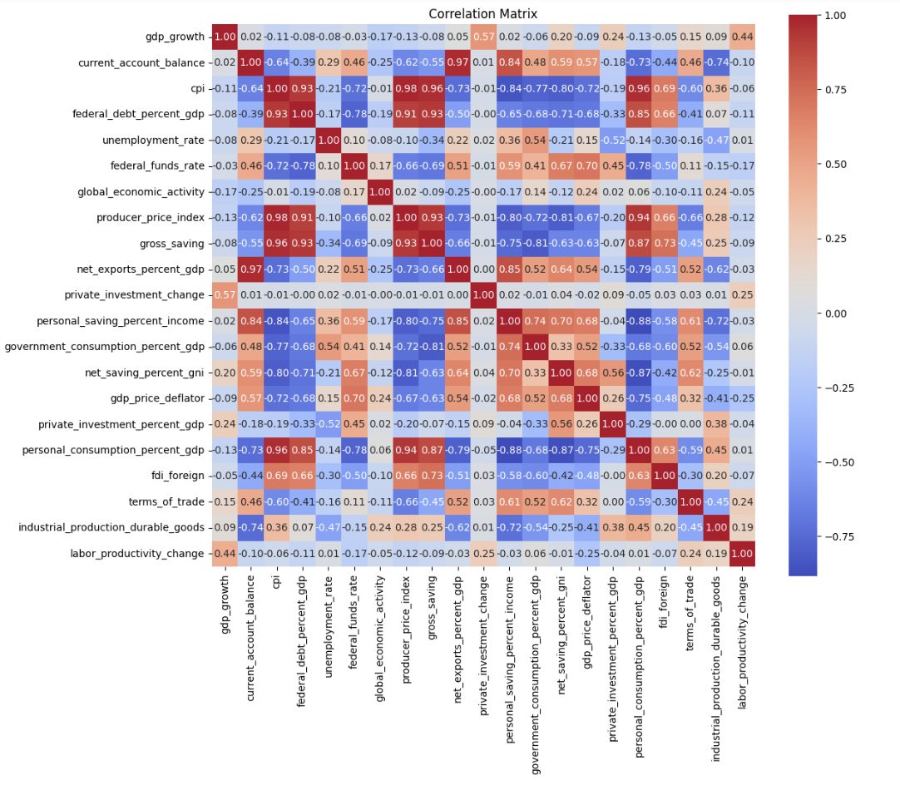
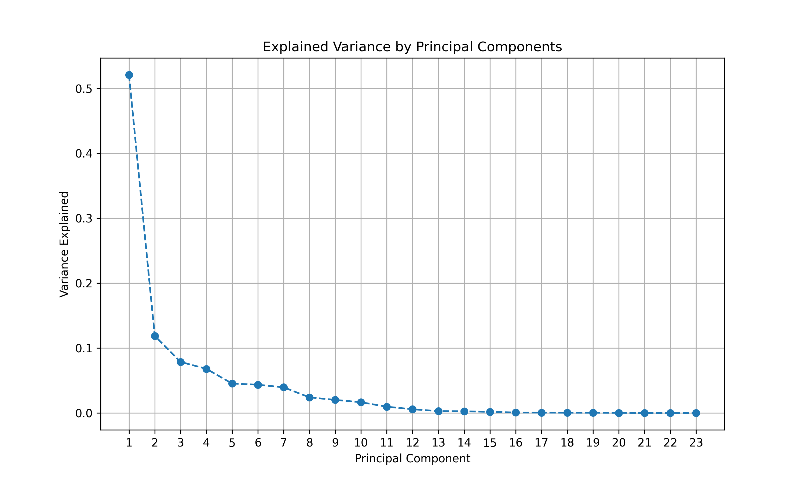
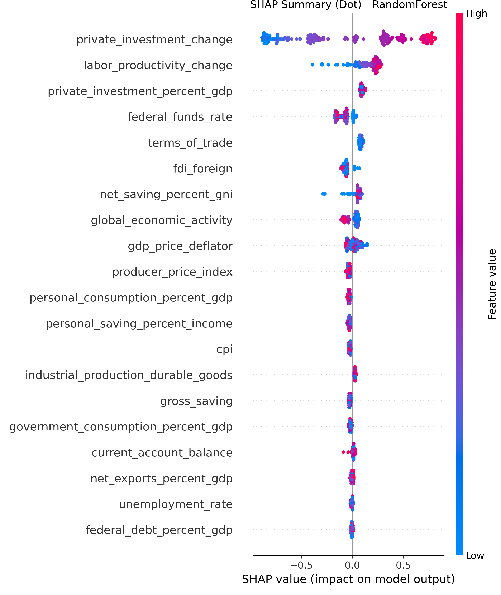
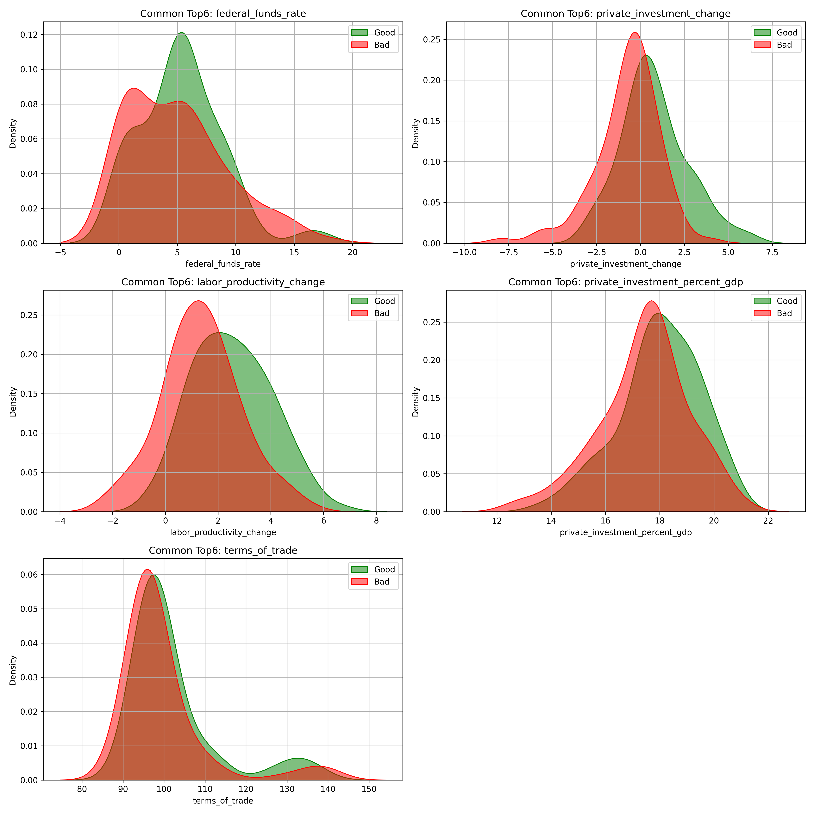

Overview
This project compares the predictive accuracy of tree-based machine learning models against a traditional autoregressive baseline for quarterly US GDP growth forecasting. The dataset contains 21 macroeconomic indicators from the Federal Reserve Economic Data (FRED) spanning 1970Q1 to 2020Q1, including inflation, private investment, unemployment, current account balance, labor productivity, and public debt.
The primary research question is whether non-linear models that can capture interaction effects between macro variables meaningfully outperform a well-specified AR(4) baseline. The answer is yes, but by how much — and which features drive the improvement — is the more interesting story.
Data & Feature Selection
Feature importance was ranked using both Random Forest and Gradient Boosting permutation importance, with PCA applied separately to reduce the 21-variable feature space while preserving explained variance. The correlation matrix revealed meaningful multicollinearity among inflation-related indicators, motivating the PCA step.
Top features by both methods: private investment change, labor productivity, inflation rate. Unemployment and public debt carry negative effects consistent with economic theory.

Correlation matrix — 21 macroeconomic features

Feature importance — Random Forest

Feature importance — Gradient Boosting

PCA explained variance
Models & Performance
Three models trained on 1970Q1–2012Q4 and tested out-of-sample on 2013Q1–2020Q1:
- AR(4) baseline: four lags of GDP growth — the standard econometric benchmark. Test MSE: 0.157
- Random Forest: ensemble of 100 decision trees with bootstrap aggregation. Test MSE: 0.120 — 24% improvement over AR(4)
- Gradient Boosting: sequential boosting on residuals. Test MSE: 0.113 — 28% improvement, best overall
0.113
Gradient Boosting test MSE — best out-of-sample accuracy
−28%
MSE reduction vs. AR(4) baseline (0.157 → 0.113)
−24%
MSE reduction for Random Forest (0.157 → 0.120)
SHAP Analysis & Model Interpretation
SHAP (SHapley Additive exPlanations) values decompose each prediction into individual feature contributions, enabling model-level interpretation beyond global feature importance rankings.
- Private investment change: strongest positive contributor — a 1 SD increase corresponds to a meaningful upward revision in the GDP forecast
- Labor productivity: second most influential positive driver
- Unemployment rate & public debt: consistently negative SHAP values, aligning with Keynesian and fiscal theory predictions

SHAP beeswarm — Random Forest

SHAP beeswarm — Gradient Boosting
Forecast Visualizations

Predicted vs. actual GDP growth — all three models

Feature distributions by GDP growth regime